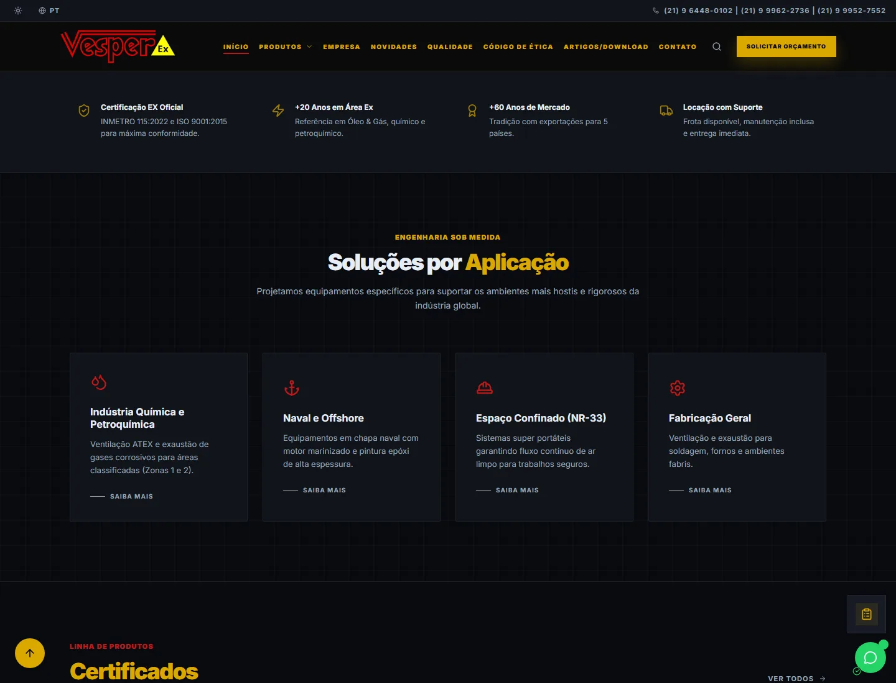
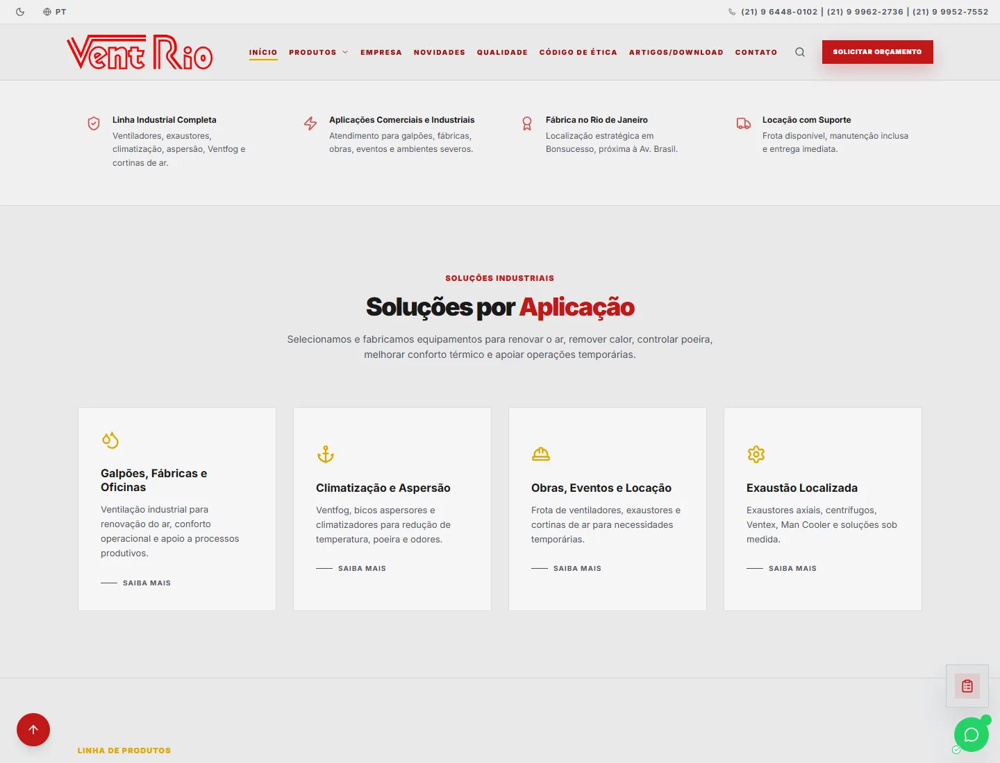
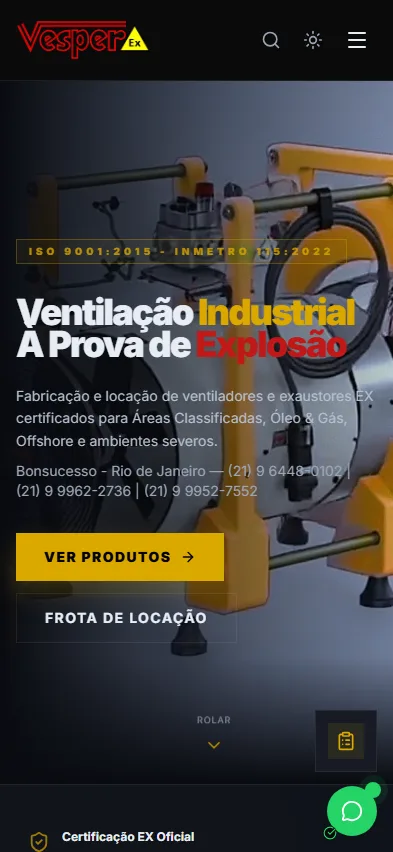
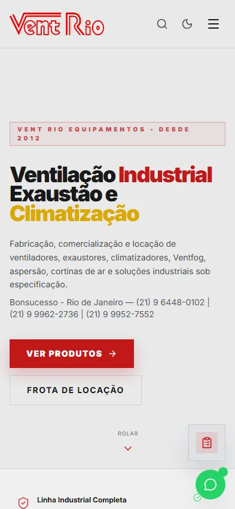

Context and problem
Two industrial audiences needed technical catalogs and commercial paths that worked clearly on desktop and mobile, without weakening the identity of either brand.
CASE / INDUSTRIAL-WEBSITES
IN PRODUCTIONTwo institutional websites, two distinct identities
Two industrial websites in production, with distinct brand and catalog experiences, PT-BR/EN internationalization and controlled commercial integrations.
VISUAL EVIDENCE




What this gallery shows
The selection prioritizes real screens, sanitized copies or declared technical flows, always with context indicated in the caption.
Public limit
Operational data, credentials, private integrations and client information are not part of this publication.
Two industrial audiences needed technical catalogs and commercial paths that worked clearly on desktop and mobile, without weakening the identity of either brand.
I structured the experience, responsive frontend, publishing and content organization for each web presence while preserving its own positioning and navigation.
React/Vite, a data-driven catalog and PT-BR/EN internationalization. Commercial integrations operate outside this public copy; credentials, lead data and backend details are intentionally excluded.
What this case does not show
The public copies remove credentials, backend and lead data.
If the operation grew
Evolution depends on the state and limitations described in this case; it is not presented as an already delivered capability.
The captures above show only the public layer of each website. They contain no credentials, lead data, CRM data or internal information.